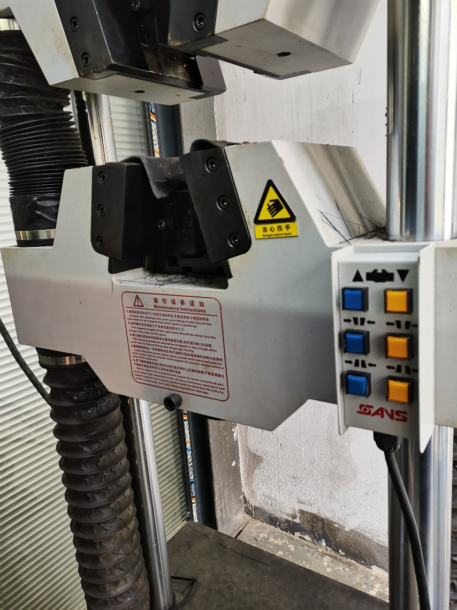
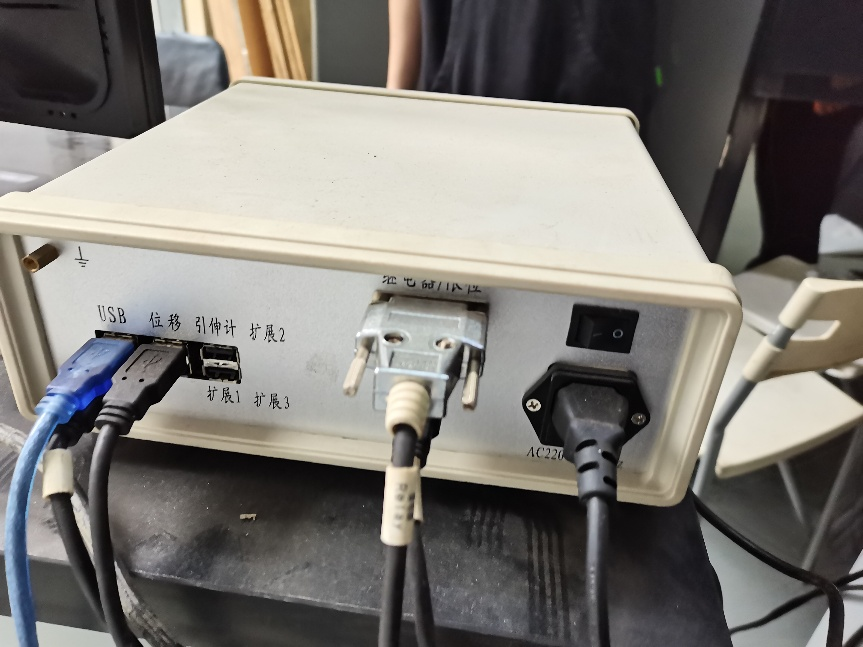
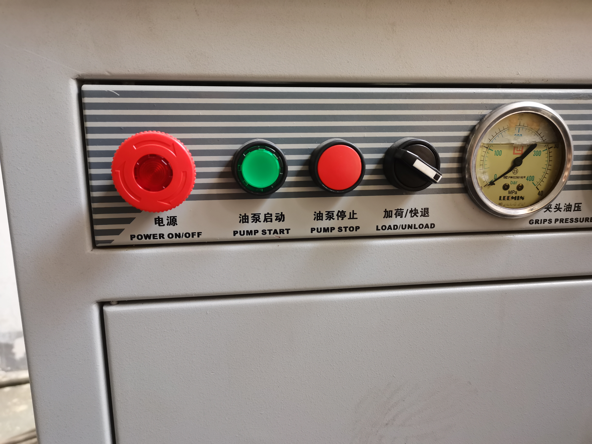
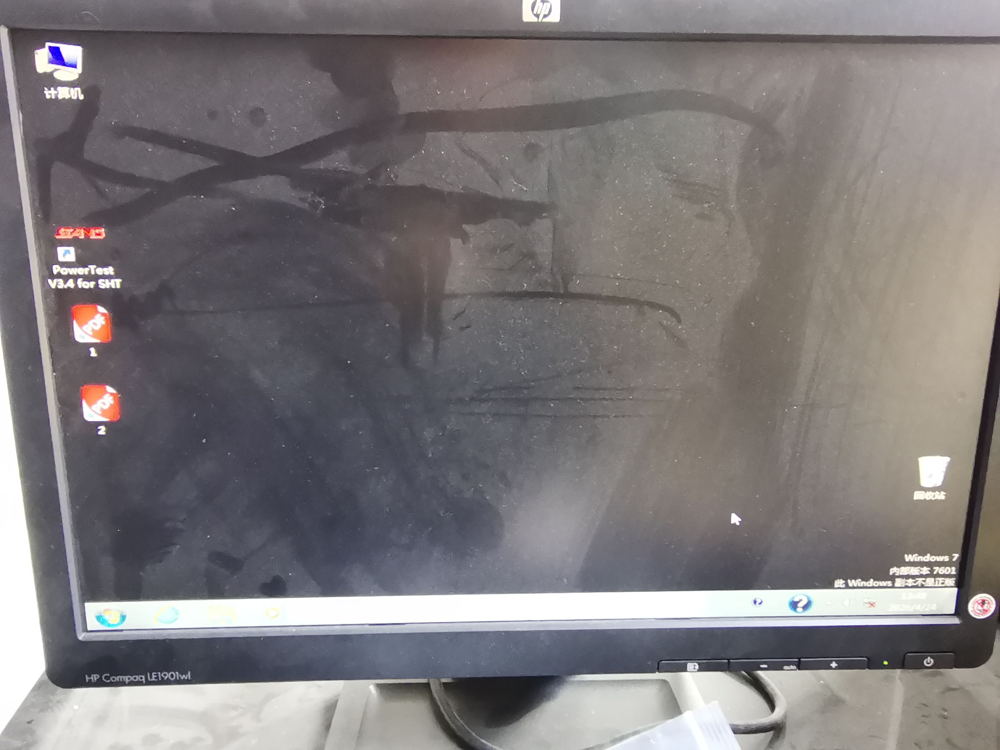
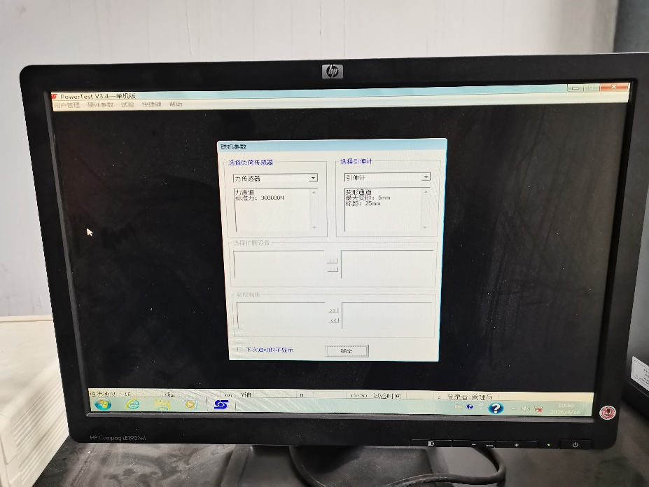
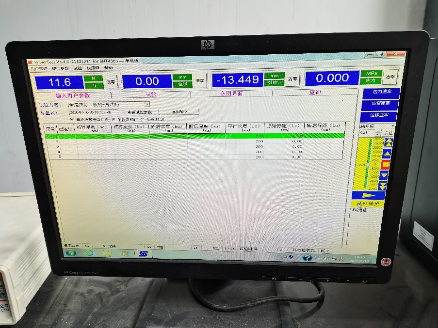
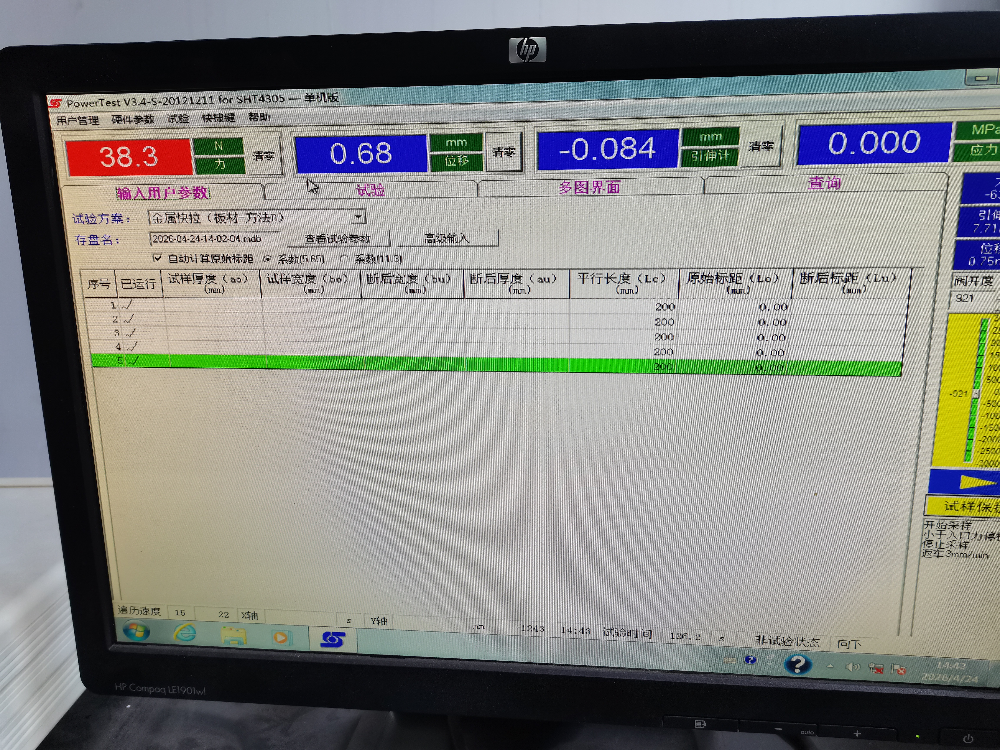
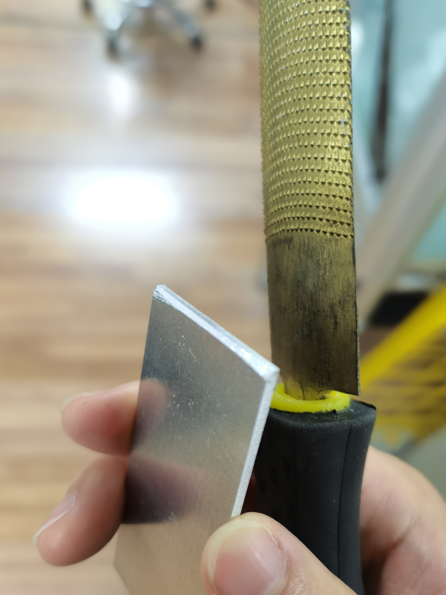
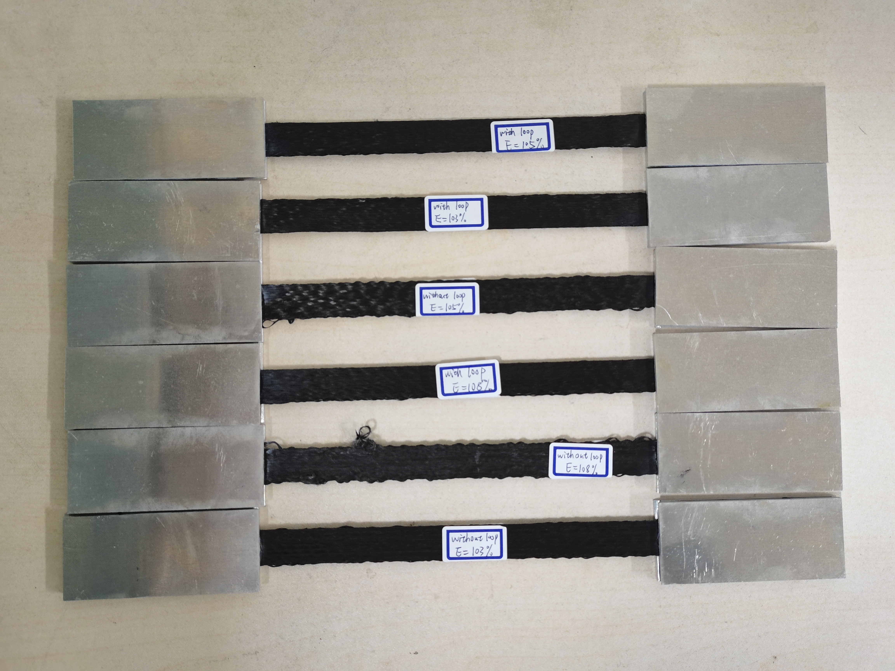

{kind=link}
开物馆拉伸机使用说明
撰写： 王实 审核： 陆殿雄 特别感谢： 傅前亮
一、设备概述
拉伸试验机位于 开物馆 Y600 机器放置处。该设备依据 ASTM_D3039 试验标准，用于测定高模量纤维增强聚合物基复合材料的面内拉伸性能，适用于连续纤维或短纤维增强复合材料（层压板需在测试方向上平衡对称）。

拉伸试验机
试验机右侧控制面板有 6 个按钮，从左至右、从上到下依次为：
按钮 |
功能 |
|---|---|
抬升下夹块 |
下夹块上移 |
降下下夹块 |
下夹块下移 |
关闭上夹块 |
夹紧上侧 |
打开上夹块 |
松开上侧 |
关闭下夹块 |
夹紧下侧 |
打开下夹块 |
松开下侧 |
二、设备操作流程
2.1 开机
第一步：打开控制系统电源
将全数字闭环测控系统的电源开关打开（开关在背面）。

全数字闭环测控系统电源开关
第二步：启动液压油泵

操作开关
从左至右的开关依次为：电源（急停开关）、油泵启动、油泵停止、加荷/快退。
操作顺序：
顺时针旋转旋钮以打开电源
按下 油泵启动 按钮
第三步：打开测试软件
打开试验机旁的台式机，双击桌面上的 PowerTest 测试软件。
备注
该电脑款式过于老旧，且鼠标接触不良，建议 自带鼠标 前往。

电脑桌面测试软件
打开软件后会进入联机参数选择界面，选择 默认参数 即可。

联机参数界面
进入软件主页面后，选择需要的试验方案。

测试软件主页面
2.2 试样装夹
将操作面板上的旋钮选至 加荷
将软件界面中力、位移等 4 项数值 清零
点击 抬升/降下下夹块 按钮，将下夹块移动到合适位置，使粘接好的样条能放入上下夹块之间
先 关闭上夹块 夹紧样条上侧，观察样条是否保持竖直，若否则进行相应调整
确认后再 关闭下夹块 夹紧样条下侧（此时样条可能会有些许弯曲，属正常现象）
2.3 测试运行
点击 试样保护，显示力数值的界面应变红，机器会自动调整位移将试样拉直
待力数值变化平稳后，点击 开始 按钮
机器自动按照额定速率拉伸试样，等待完成即可

试样保护
警告
机器拉伸过程中 不要靠近，以免试样拉断时碎片飞出伤人！
试验结束后：
打开上下夹块，取下拉断后的试样
将旋钮选至 快退**（关机后再选至 **加荷 防止下一个人开始实验没有进行）
选择 暂时不填入数据
重复装夹步骤进行下一组试验
2.4 数据处理
结果文件储存在 E:\Program Files\PowerTestV3.4-SHT\data 文件夹中：
文件以日期时间命名，一般找到 最新文件 即为所需结果文件
同一打开过程中做的试验归为一组，储存在同一文件中（最多 5 次）
若多次开关软件，则会分为多组储存在多个文件中
结果文件为
.mdb格式，需用 Access 软件打开后另存为.xlsx
找到目标文件并存储在u盘中
2.5 关机
停止油泵
按下 急停按钮 以关闭电源
关闭全数字闭环测控系统电源
关闭电脑电源
三、拉伸测试试验
3.1 测试介绍
本试验依据 ASTM_D3039 标准，测定连续碳纤维层压板的面内拉伸性能，为材料研发、质量保证和结构设计提供数据。
3.2 试样制备
试样尺寸：250mm × 15mm × 1mm（0°单向层压板）
制备流程：
设置工艺参数，使用 iFiber 切片生成 Gcode，打印机打印试样
每种测试条件至少 5 个 试样
打印完成后测量样条实际尺寸（长度、宽度、厚度）
去济事楼 148 获取金属片与胶水
在样条两端上下表面各用两片金属片粘接固定，保证未粘接区域长度为 150mm
粘接后静置 24 小时
注意事项：
粘接前擦拭金属片表面，不要有灰尘
有预处理液的话尽量在上胶水前涂一点，可提升胶水效果
注意胶水有效日期，开封太久黏性会下降
金属片与样条接触一侧的短边需用砂纸或锉刀打磨形成小倒角

金属片打磨样图

粘接后成品图
3.3 测试步骤
按第二章所述完成开机、登录软件（方案选"金属快拉—方法B"）后：
力值清零，旋钮选至加荷
将粘好的样条装夹在上下夹块之间，先夹紧上侧，确认竖直后再夹紧下侧
点击 试样保护，待力数值稳定
点击 开始，机器自动拉伸至试样断裂
结束后取下试样，旋钮转至快退再转回加荷
重复以上步骤进行下一组试验
3.4 结果处理
用 Access 打开
.mdb结果文件，另存为.xlsx用代码绘图展示拉伸长度与拉伸力关系（参考附录程序）
计算拉伸强度